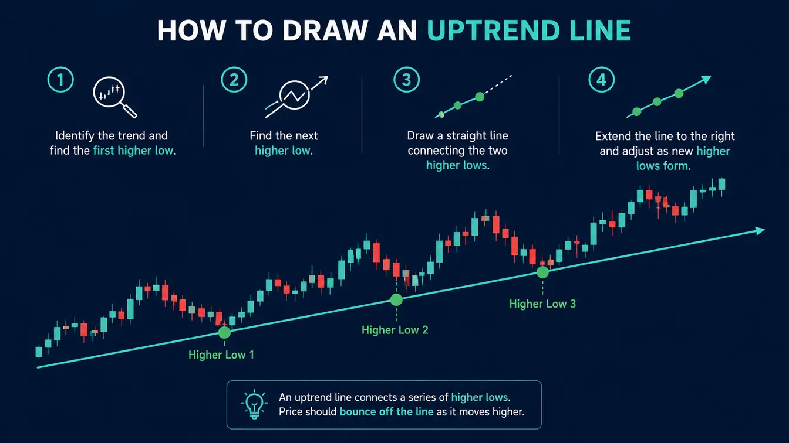
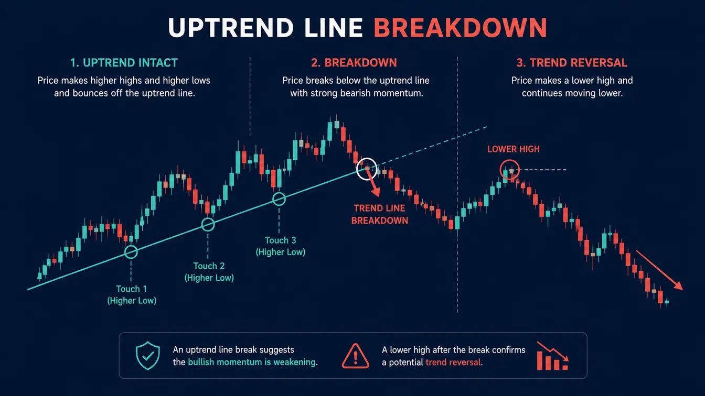

"The trend is your friend." You've heard this phrase a hundred times. But what does it actually mean? And how do you
identify the trend?
In my first year, I traded against the trend constantly. I'd see a price drop and think "It's cheap — I'll buy." Then
it would drop further. I was fighting the market instead of following it.
In this guide, I'll show you exactly how to identify trends using trend lines, and how to trade with the trend — not
against it.
💡 Key Takeaway: Trading with the trend doubles your probability of success. Fighting the trend is
like swimming upstream — exhausting and usually unsuccessful.
What Are Trends? (Uptrend, Downtrend, Sideways)
A trend is the general direction in which the market is moving. There are three types:
Uptrend (Bullish)
- Each new high is HIGHER than the previous high
- Each new low is HIGHER than the previous low
- Trend line is drawn BELOW the price (connecting higher lows)
- Best strategy: Buy on pullbacks to the trend line
Downtrend (Bearish)
- Each new low is LOWER than the previous low
- Each new high is LOWER than the previous high
- Trend line is drawn ABOVE the price (connecting lower highs)
- Best strategy: Sell on pullbacks to the trend line
Sideways (Ranging)
- Price moves horizontally between support and resistance
- No clear trend direction
- Best strategy: Buy at support, sell at resistance (range trading)
- Avoid trend-following strategies in ranging markets
📌 Pro Tip: Higher timeframes (daily, 4-hour) show the primary trend. Lower timeframes (1-hour,
15-min) show the secondary trend. Always align your trades with the higher timeframe trend.
How to Draw Trend Lines Correctly

Uptrend Line
- Connect two or more higher lows
- Line should run BELOW the price
- Draw through the wicks (not the candle bodies)
- More touches = stronger trend line
Downtrend Line
- Connect two or more lower highs
- Line should run ABOVE the price
- Draw through the wicks (not the candle bodies)
- More touches = stronger trend line
⚠️ Critical Rule: Start with the highest possible timeframe first. Draw your trend lines on the
daily chart, then 4-hour, then 1-hour. Higher timeframe trend lines are always more significant.
What Makes a Valid Trend Line?
| Factor |
Weak Trend Line |
Strong Trend Line |
| Number of touches |
2 touches |
3+ touches |
| Timeframe |
15-minute |
Daily or 4-hour |
| Angle |
Too steep (exhaustion likely) |
45 degrees (sustainable) |
| Breaks |
Often broken and re-drawn |
Respected for weeks/months |
📌 The 3-Touch Rule: A trend line with 3+ touches is much more significant than one with only 2
touches. The more times price has respected the line, the stronger it is.
How to Spot a Trend Reversal

No trend lasts forever. Here are signs a trend may be ending:
- Trend line break: Price closes below the uptrend line (or above downtrend line)
- Failed breakout: Price breaks the trend line but fails to continue
- Lower high in uptrend: Price makes a lower high (potential reversal down)
- Higher low in downtrend: Price makes a higher low (potential reversal up)
- Support/resistance confluence: Trend line break coincides with a major support/resistance level
⚠️ Don't jump too early: A trend line break doesn't always mean reversal. Wait for confirmation — a
close below the line plus a lower high (for uptrend) before assuming the trend is over.
How to Trade with Trend Lines
Strategy 1: Pullback to Trend Line (Highest Probability)
In an uptrend, wait for price to pull back to the trend line, then buy. In a downtrend, wait for price to pull back
to the trend line, then sell.
- Entry: At the trend line on a pullback
- Stop loss: Below the trend line (for uptrend) or above (for downtrend)
- Take profit: Previous high (for uptrend) or previous low (for downtrend)
Strategy 2: Trend Line Breakout
When price breaks a trend line, it may signal a reversal or acceleration.
- Entry: After price closes beyond the trend line (wait for retest)
- Stop loss: Beyond the opposite side of the trend line
- Take profit: Measured move or next support/resistance
📌 My Preference: I prefer pullback trades at the trend line. They offer better risk-reward and
higher probability than chasing breakouts.
Common Trend Line Mistakes
- Drawing through candle bodies: Always draw through wicks. The wick shows where price was
rejected.
- Forcing a trend line: Not every chart has a clear trend. If you're struggling to draw it, the
market is ranging.
- Using too steep an angle: A 70-degree trend line will break quickly. 45 degrees is sustainable.
- Ignoring higher timeframes: A 1-hour uptrend might be a pullback within a daily downtrend.
- Trading every touch: Not every touch is an entry. Wait for confirmation (candlestick pattern,
momentum).
⚠️ The Biggest Mistake: Forcing a trend line when the market is ranging. In a sideways market,
trend lines break constantly. Learn to identify ranging markets and switch to range trading strategies.
Follow the Path of Least Resistance
The market moves in trends. Your job is not to predict where price will go — it's to identify the current trend and
follow it.
Identify the trend on daily and 4-hour charts. Draw your trend lines. Wait for pullbacks. Enter in the
direction of the trend. Do this, and you'll stop fighting the market.